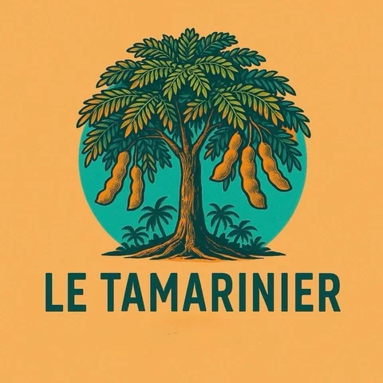
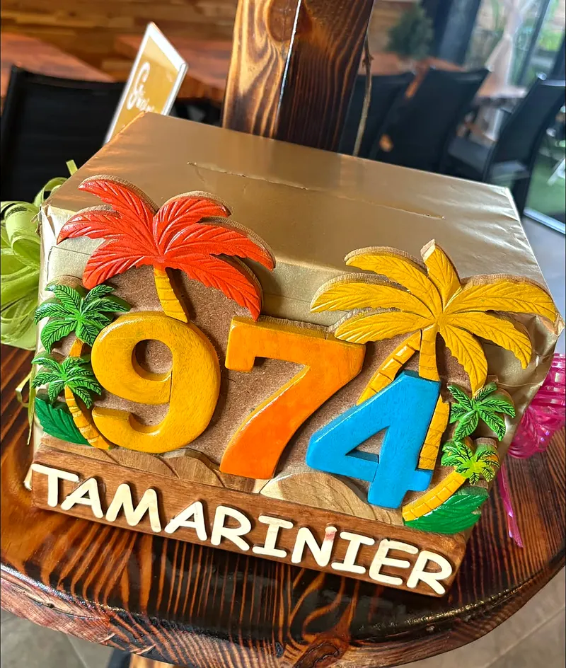
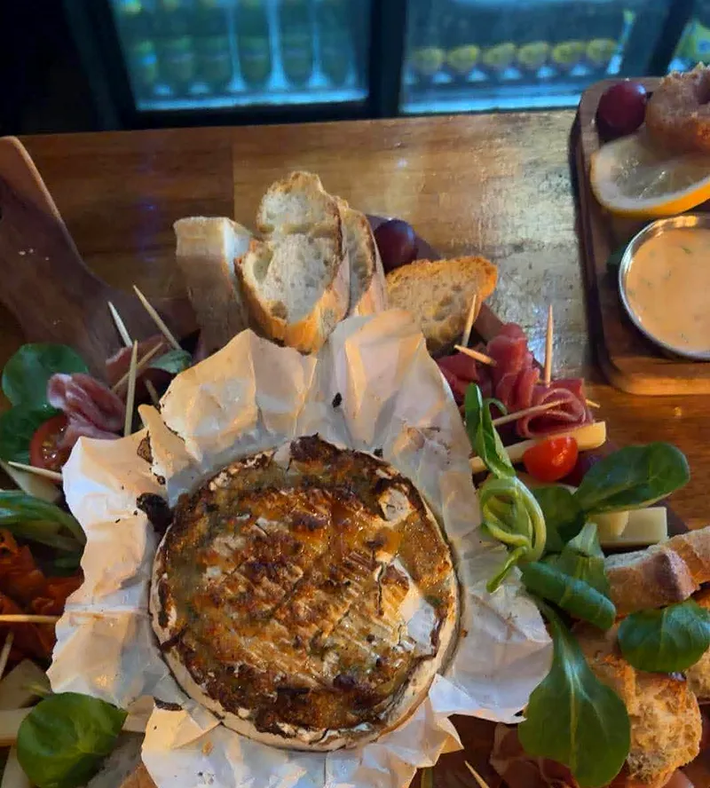
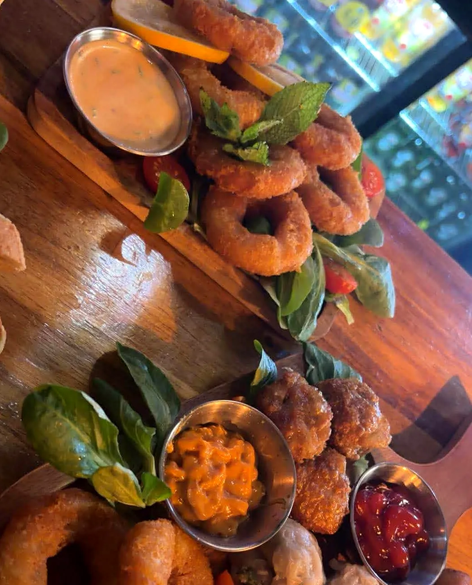
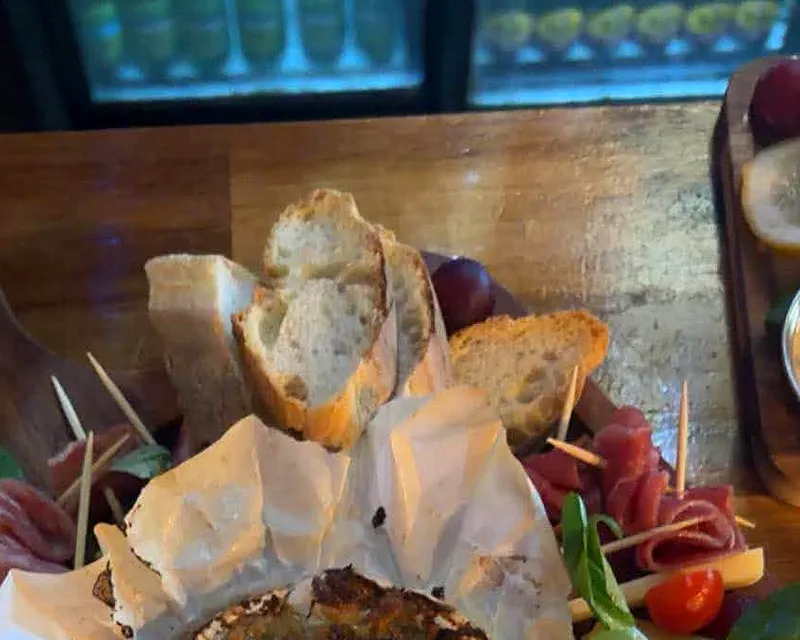
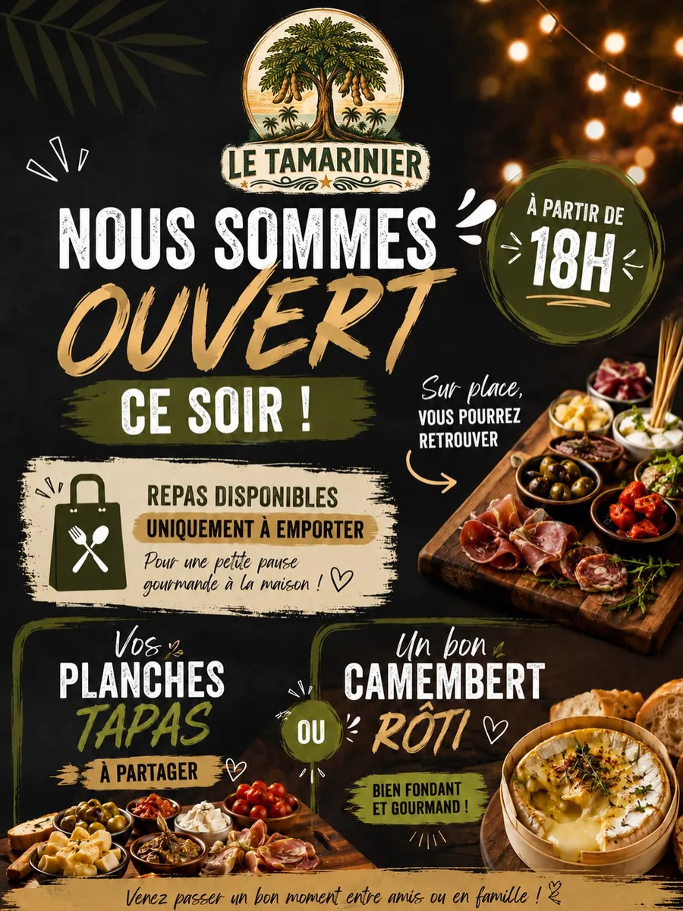
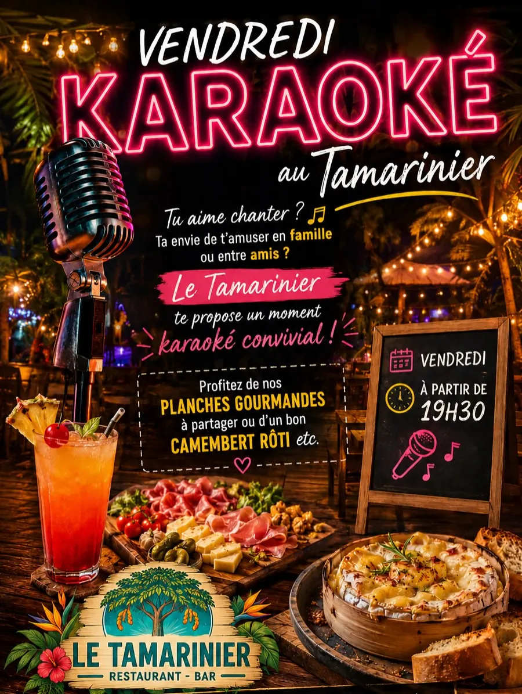
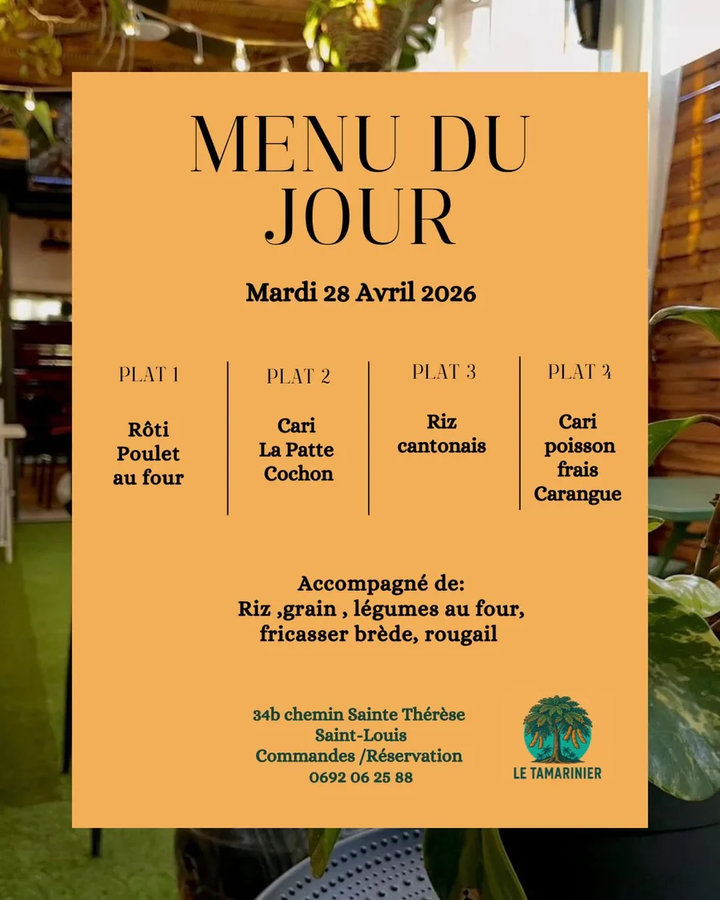
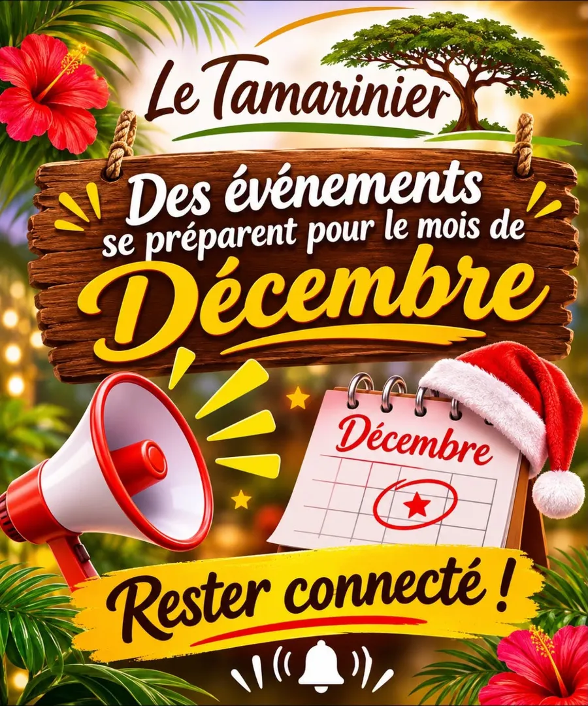

Back to Return
Les plus grands tubes des années 80, 90 et 2000, aux platines : DJ Bruno. « Sortez vos meilleurs pas de danse ! »
Réservations : 0692 06 25 88

Bistro · Restaurant-bar · Saint-Louis
Ici, fraîcheur, gourmandise et bonne humeur sont au menu 😋
Un lieu chaleureux où vous pourrez partager de bons moments en famille ou entre amis.
« Un immense MERCI à toutes les personnes qui ont participé et qui nous accompagnent dans cette belle aventure depuis maintenant 1 an ! »Le Tamarinier, tombola anniversaire, 11 octobre 2026

Le soir, le Tamarinier se fait restaurant-bar : planches gourmandes à partager, un bon camembert rôti « bien fondant et gourmand ! », et le vendredi, place au karaoké convivial à partir de 19h30.
« Le Tamarinier te propose un moment karaoké convivial ! »Affiche « Vendredi karaoké », 5 novembre 2026


Les plus grands tubes des années 80, 90 et 2000, aux platines : DJ Bruno. « Sortez vos meilleurs pas de danse ! »
Réservations : 0692 06 25 88
Sur scène : Kanageek, Nounours, Grand Farid, Latchou et Malika. Entrée 5 €, sortie au chapeau pour soutenir les artistes.
Les places sont limitées, pensez à réserver !





Faites glisser pour voir plus →
Pour les fêtes, offrez un bon moment au Tamarinier : une table entre amis, un repas de fin d'année en famille ou entre collègues, une soirée à partager.
Une table au Tamarinier pour quelqu'un qui vous est cher.
Entre collègues ou en famille, sur place ou à emporter : on en parle ensemble.
Back to Return le 11, stand-up le 12 : de belles idées de sorties à partager.